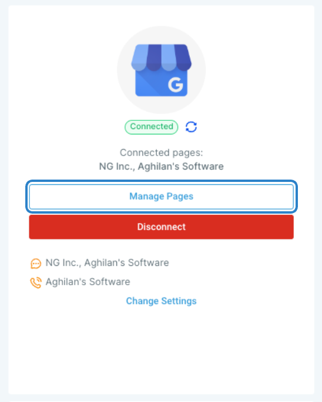
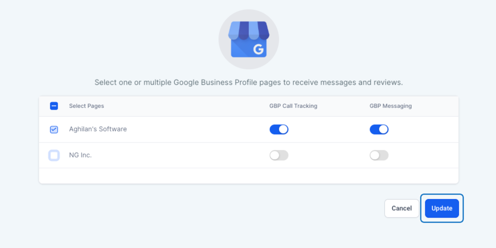
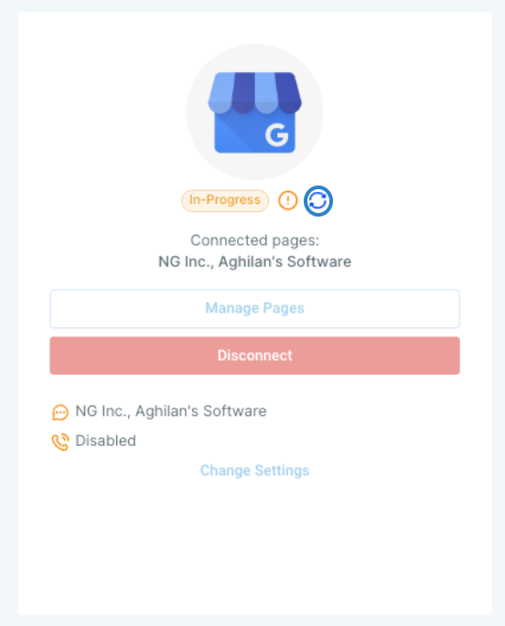
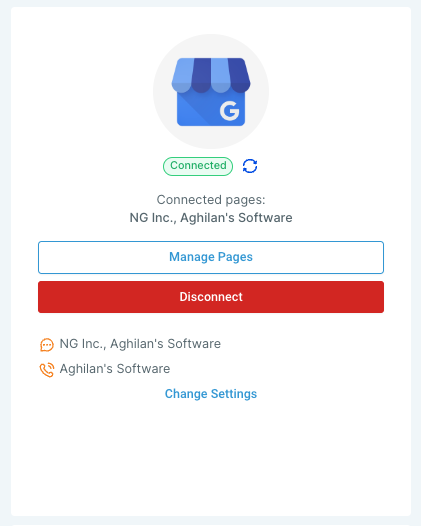

Learn how to effortlessly add or remove Google Business Profile pages and adjust GBP messaging and call tracking settings within your sub-account. This guide provides a simple step-by-step process to manage your GBP pages.
Please note that the "Manage Pages" option is available only after the successful integration of GBP pages into your sub-account. To learn how to connect multiple GBP pages to a sub-account, click here.
TABLE OF CONTENTS
Manage Pages:
To add or remove pages or to change GBP messaging or call tracking options, click on 'Manage Pages'.

Update Settings:
Make the necessary adjustments and click on 'Update' to apply the changes.

Note: The changes made at the page level do not impact previous data or records and only affect data on a going-forward basis based on the changes.
Verify Updates:
Click on the 'Refresh' icon to check the update status of the connection.

Upon successful connection, the details of the updated pages will be displayed in the GBP section.
